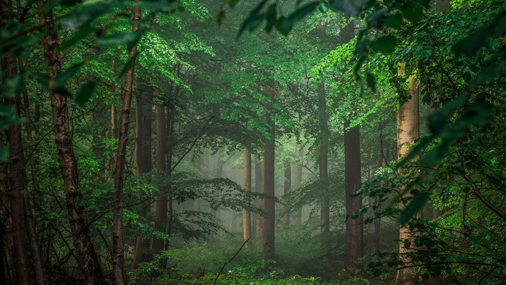
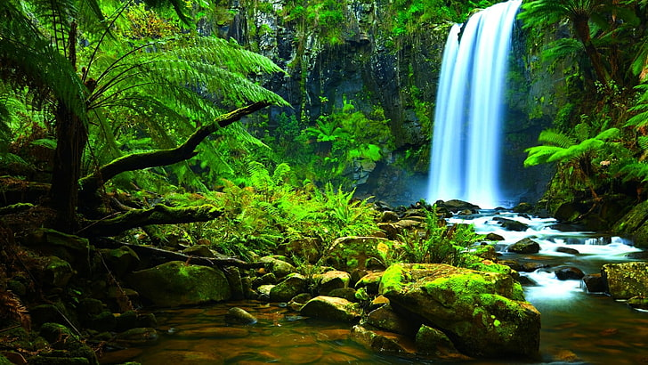

Deserts: Life in the Extremes
Despite the harsh conditions, deserts are home to a variety of unique life forms. From cacti to desert foxes, they have adapted in amazing ways.
Desert Flora & Fauna

Many desert plants store water in their leaves, while animals often become nocturnal to avoid the intense daytime heat.
Forests: Earth's Lungs

Forests provide oxygen, purify air, and stabilize the climate. Rainforests are especially crucial for biodiversity and carbon sequestration.
Rainforests

Rainforests are home to millions of species and are vital for controlling the Earth's climate. But they are rapidly disappearing.